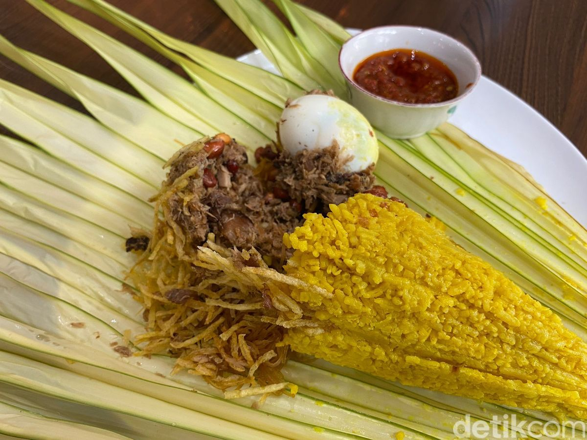
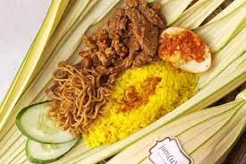

Nasi Kuning Manado adalah hidangan khas yang biasa disajikan pada acara-acara khusus.
Nasi ini memiliki aroma yang harum dan rasa gurih karena dimasak dengan santan dan bumbu rempah.
Bahan Bahan:
- Beras
- Santan
- Kunyit (untuk pewarna alami)
- Daun pandan
- Daun salam
- Serai
- Garam